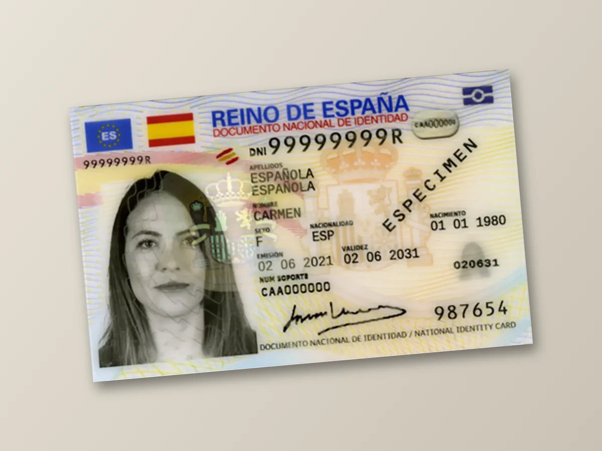
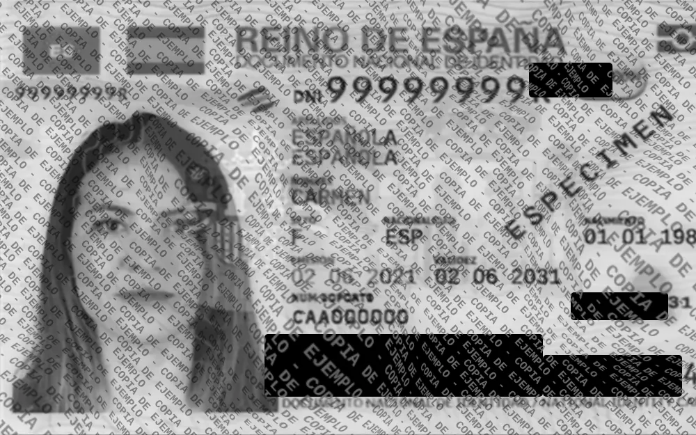

Protección del DNI
Esta página te permite ocultar fácilmente los datos privados de tu DNI. En ocasiones te pueden pedir una copia del DNI, pero lo que no hay que hacer es mandarles una foto tal cual ya que si cae en malas manos puede causarte graves problemas.
Aquí puedes bloquear los datos que no son necesarios y sobreescribir un texto para que no lo puedan utilizar con otros propósitos, de esta manera la imagen que compartas será única para evitar que la reutilicen.
Todo el proceso se realiza únicamente en tu navegador, no se envían los datos a ninguna parte.
¿Cómo queda la copia protegida?
De una foto normal del DNI se pasa a una copia en blanco y negro, enderezada, con los datos privados tapados y el motivo de la copia sobreescrito. Si quieres probar el programa sin usar tu DNI, en la página de pruebas tienes fotos de ejemplo.

